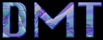

DMT is considered by many to be the ultimate psychedelic, the holy grail of entheogens. It is short acting, immensely powerful, and native to your brain. In nature it is very common, but it is almost unknown as a "street drug".
For convenience I have listed both N,N,-DMT and 5-MeO-DMT here, although they are distinct drugs.
- Deep Metaprogramming Trip (Ayahuasca)
- Breathe (5-MeO-DMT)
- Deep Vibration (5-MeO-DMT)
- A Day in the Park (5-MeO-DMT/2CB)
- Geometry (5-MeO-DMT)
- The Folding Universe (5-MeO-DMT)
- MeO Mixture (LSD + 5-MeO-DMT)
- La Purga (the Purge) (Ayahuasca)
- Ginger Ale Afternoon (5-Meo-DMT/LSD)
- Ecstatic ReUnion (5-MeO-DMT)
- Old School Trip (LSD + 5-MeO-DMT)
- Metaphysical Lightning (smoked DMT)
- Tool Show (5-MeO-DMT/LSD)
- Salvia meets MeO (Salvia/5-MeO-DMT)
- Three Successive Journeys (5-MeO-DMT)
- Five Trips (5-MeO-DMT)
- MeO Meets Music (5-MeO-DMT)
- The Rematch (Ayahuasca)
- Testing the Water (5-MeO-DMT)
- This Is Music (5-MeO-DMT)
- 5-MeO Insight (5-MeO-DMT)
- Mindbender: Deep Salvia Voyage (LSD + Salvia/+5-MeO-DMT)
- Poor Planning (5-MeO-DMT/LSD)
- Before Work (5-MeO-DMT)
- Goddess Revealed (Salvia + 5-MeO-DMT)
- Visual MeO (5-MeO-DMT)
- Mushrooms + MeO (Mushrooms + 5-MeO-DMT)
- Oceanic Bliss (5-MeO-DMT)
- Sex Magick and a Later Revisit (5-MeO-DMT)
- 2 Intense MeO Trips (5-MeO-DMT)
- 5-MeO-DMT - Another Short Infinity (5-MeO-DMT)
- Seven Day Experiment (5-MeO-DMT)
- Three Nights with MeO (5-MeO-DMT)
- A Night Out Turns In (5-MeO-DIPT + 5-MeO-DMT)
- The Music in the MeO (5-MeO-DMT)
- Tryptamine Tasting (5-MeO-DMT/DMT)
- DMT - Parallel Realities Awash in Time (DMT)
- A Threshold Experience (2CT7 + DMT)
- Tryptamine Trail Mix (5-MeO-DMT/DMT)
- Evening Jaunt (5-MeO-DMT)
- A Small Release (DMT)
- Five Minutes of Light (5-MeO-DMT)